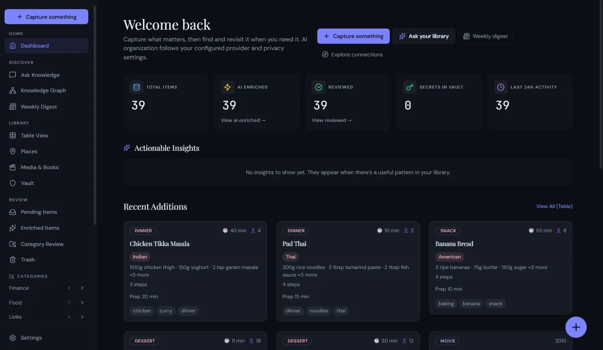
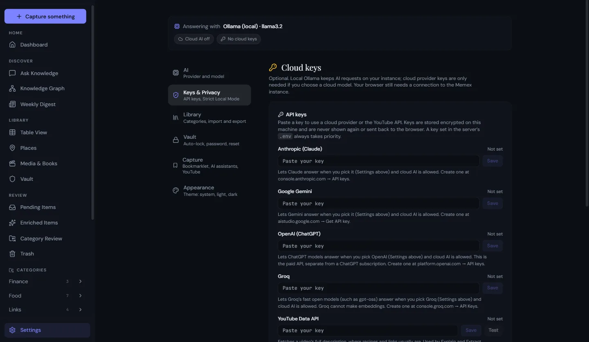

Everything you save, organized on your own machine.
Memex reads the notes, links, recipes and files you throw at it, files them, and answers questions about them. The AI runs on your computer. A cloud AI is something you switch on yourself, one key at a time.
Install with Docker View the source
Free, MIT licensed, no sign-up with anyone, no telemetry. Light and dark, like the app.
- Garlic and olive oil pasta recipe
- Kyoto in spring: temples and gardens place
- Landlord bank details, account number 0012 3456 7890 note
- Router admin, PIN: 4821 note
- Gift ideas for the family note
- Wi-Fi password vault
- Weekly review checklist note
Sample notes, and the same rules the app applies before every cloud call. They are a safety net, not a guarantee: tag anything that must never leave as private, or keep it in the vault.
See it before you install it
Real screens from Memex v1.2, captured on a scratch install loaded with the built-in sample data. Every note shown is made up.


Save it now, find it later
- Capture
- Paste a link, drop a PDF or a photo, record a voice memo, import Google Keep, or press the bookmarklet in your browser. Saving is instant; the AI does its work in the background and shows how long it will take.
- Organize
- Every item gets a type, categories, tags and a short summary. Movies and books get a shelf with ratings, places get a map link, and the people, authors and cities in your notes become connected entries you can browse. Each item says which AI classified it, and you can redo it with another.
- Ask
- Ask in plain words, such as "which Thai place did I want to try near the harbour?", and get an answer with the notes it came from. Search finds meaning, not just matching words.
Local by default, cloud when you decide
Out of the box Memex uses Ollama on your computer, so nothing is sent anywhere. If you would rather not run a model, you can add a Gemini, OpenAI, Claude or Groq key instead. You can even pick a different one for each job, such as Gemini for Ask and your own computer for everything else.
| On your computer | In the cloud | |
|---|---|---|
| Reads and classifies your notes | Ollama (llama3.2, gemma3) | Gemini, OpenAI, Claude or Groq |
| Powers search and Ask | nomic-embed-text | Gemini or OpenAI embeddings |
| Needs a key and your consent | No | Yes, and it is off until you turn it on |
| Private items | Handled here | Never sent |
| Cost | Free, uses your hardware | Billed by the provider, not by Memex |
The rest of what is in the box
- Weekly digest. A short summary of what you saved, an "on this day" memory, and a connection between two notes you had not linked.
- Rediscovery. Forgotten notes come back to the dashboard instead of sinking.
- Reminders. Attach a date to any item and opt in from the dashboard to get browser notifications when it is due.
- Password vault. Encrypted in your browser with a master password that never leaves it.
- Sharing. A public link for one item that expires in a week and can be revoked.
- AI assistants. Connect Claude Desktop or Cursor and ask them about your notes, with private items kept out.
- Obsidian export. Your whole library as Markdown files, whenever you want to leave.
- Backup and restore. One command each. Restore refuses a file that is not a complete backup.
- Sample data. Forty made-up items to look around in, removed with one click.
- History you can undo. Every AI classification is kept, so you can roll one back.
- Installable. Opens like an app on your desktop or phone. The interface shell can load offline; library data and actions need a connection to your Memex instance.
What stays on your machine, and what does not
What Memex does
- Keeps your notes in a Postgres database you run yourself.
- Listens on your own computer only, by default. Nothing is exposed to your network.
- Sends nothing to a cloud AI unless you add a key, choose it and consent, and never in Strict Local Mode.
- Holds back vault items, items filed under Passwords or Personal, items tagged private, and text that looks like account details.
- Encrypts the vault in your browser. The server only ever sees ciphertext.
What it does not
- It does not encrypt the rest of your database or your backups. Use disk encryption and keep backups private.
- Saving a link is not offline. Memex sends the address to a free reader service to fetch the page. Pasted text never does, and Strict Local Mode blocks it.
- It has one account and is not built for sharing a server with other people.
- A cloud AI you enable does see what you send it. The guard above reduces that; it cannot promise it.
- It cannot recover a lost vault password. That is what makes the vault private.
Use your notes from an AI assistant
Memex includes a small MCP server. Claude Desktop, Cursor and other MCP apps start it on your computer, and it talks to your own Memex. Then you can ask the assistant "what did I save about the harbour restaurants?" or say "save this recipe to Memex", without leaving the app you are in.
Set it up in about two minutes
- Build the server once with
npm run mcp:build(Node 20 or newer). - In Memex, open Settings > Capture > AI assistants and press Create key. The key is shown once.
- Paste the block Memex shows into your assistant's MCP settings, with the path to your Memex folder. For Claude Desktop that is
claude_desktop_config.json. - Restart the assistant. Memex must be running.
{
"mcpServers": {
"memex": {
"command": "node",
"args": ["/path/to/memex/mcp/dist/index.js"],
"env": {
"MEMEX_URL": "http://localhost:3002",
"MEMEX_MCP_KEY": "mxk_..."
}
}
}
}What the assistant can do
| Tool | What it does |
|---|---|
search_memex | Searches by meaning and keywords; returns titles, short summaries and ids |
recent_memex_items | Lists the newest items you saved |
get_memex_item | Reads the full text of one item |
save_note_to_memex | Saves a note; Memex files and tags it, and adds a from-mcp tag so you can find it |
save_link_to_memex | Saves a web page (fetched and summarised); saving the same page twice does nothing |
Safe by design
- The key works only for these five tools. It cannot delete, edit or export anything, and cannot touch settings, API keys or the vault.
- Memex keeps only a fingerprint of the key and shows the key once. Revoke locks the assistant out at once.
- The vault, Passwords and Personal, anything tagged
private,no-cloudorlocal-only, and text that looks like account details are never returned. A search only says how many matches were held back. - There is no "ask" tool on purpose, so private text never ends up inside an answer that leaves your machine.
- Strict Local Mode turns the whole thing off.
Worth knowing
- What the assistant reads goes to that assistant, which may be a cloud service. Connecting it is your choice, and you can revoke it any time.
- It runs on your computer and talks only to your own Memex.
- Tested with automated tests and a real MCP session against a stand-in Memex. If you try it with Claude Desktop or Cursor, please tell us what you find.
What is new, and why it helps
v1.2: your notes, in your AI assistant
- Use your notes from Claude Desktop, Cursor and other AI apps. A small server on your computer lets an assistant search Memex, read an item, and save a note or a web page. Ask "what did I save about the harbour restaurants?" in the app you already use. Why it helps: your notes become useful everywhere you work, not just inside Memex.
- A key that can do very little. It can search, read and save. It cannot delete, edit, export, or touch settings, keys or the vault. You see it once, Memex keeps only a fingerprint, and you can revoke it in one click. Why it helps: you can try an assistant without handing it the keys to everything.
- Private items stay private. The vault, Passwords and Personal, anything tagged private, and text that looks like account details are never shown to the assistant, and Strict Local Mode turns the whole thing off. Why it helps: the same safety rules as for a cloud AI, applied to the assistant too.
- Light and dark, your choice. A fresh palette that follows your system, with System, Light and Dark in Settings and a button in the header. This page uses the same one. Why it helps: comfortable by day and by night.
- Fits a phone. Headers, page actions and settings were reworked for small screens. Why it helps: save and search from anywhere.
- No known dependency issues. The audit of both the server and the web app is clean (checked November 2026). Why it helps: fewer known holes in the software you run.
v1.1: easy to start, easy to trust
- Install with one command.
docker compose up -dstarts the database and the app together. If something is wrong, Memex says what and how to fix it. Why it helps: no setup puzzle, and no stack trace to decode. - A first-run screen. It walks you through choosing local or cloud AI and tests the choice before you save anything. Why it helps: you know it works before your first note.
- Works without Ollama. A cloud key is enough; running a local model is optional. Why it helps: a modest laptop is fine.
- Five AI providers. Ollama, Gemini, OpenAI, Claude and Groq, each switched on by you, with a different one allowed per job. Gemini and Groq have been checked against the live services. Why it helps: use whichever key or free tier you already have, and change your mind later.
- Choose your search model. Search and Ask can use Ollama, Gemini or OpenAI embeddings. Memex shows what it would send first, works in the background, can be cancelled and resumed, and never sends private items. Why it helps: better search without a graphics card, and the change is reversible.
- See which AI answered. Every item names the model that classified it, shows a "stays on this machine" note when that is true, and can be redone with another model. Why it helps: you can see, check and compare.
- A smarter privacy guard. Besides vault items and private tags, text that looks like account numbers, PINs or an address is held back from a cloud AI. Why it helps: a safety net for the note you forgot to tag.
- Look around first. About forty made-up items load with one click and clear with one click, leaving your own notes alone. Why it helps: see the app working before you trust it with real notes.
- Backups you can trust. One command to back up and one to restore; a restore refuses a file that is not a complete backup and keeps a safety copy first. Why it helps: you can upgrade or switch models without worry.
- Closed by default. The app and the database listen on your own computer only, other websites cannot talk to it, and new passwords must be 10 characters or more. Security reports can be sent privately. Why it helps: a personal knowledge base should not be reachable from the cafe Wi-Fi.
Install it in a few minutes
You need Docker and nothing else. The first build takes a few minutes.
git clone https://github.com/jagdeepvirdi/memex.git && cd memex
cp .env.example .env # set JWT_SECRET: the file shows how to make one
docker compose up -dThen open http://localhost:3002, create your account, and choose local AI or paste a cloud key. Settings has a button that loads sample data so you can look around first.
Tested on Windows with Docker Desktop. The Docker install is also tested automatically on Linux with every change. macOS has not been tried by hand yet; if you try it, please tell us what you find.